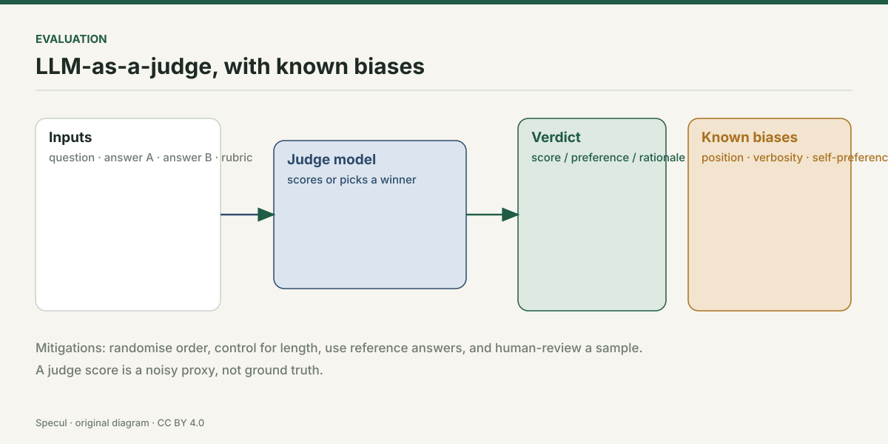

LLM-as-a-Judge（模型评审）LLM-as-a-Judge
LLM-as-a-Judge
让一个强模型按评分标准给另一个模型的回答打分或比较。Have a strong model score or compare another model’s answers against a rubric.
常见做法是给评审模型题目、参考答案和评分维度，让它输出分数或选择。
MT-Bench 与 Chatbot Arena 的论文检验了位置偏差。也检验了冗长偏差与自我偏好。
A common setup gives the judge the question, a reference answer and scoring dimensions, and asks for a score or choice.
The MT-Bench and Chatbot Arena paper systematically examined position, verbosity and self-enhancement biases.

人工评测贵且慢。模型评审能扩大规模。但必须校准偏差、抽样人工复核。不能把分数当 ground truth。Human evaluation is expensive and slow; model judging scales it up. But biases must be calibrated and sampled for human review — scores are not ground truth.
模型评审 · LLM judge · AI 评审
去导航：找现成的工具、平台、评测与学习资源Directory: ready-made tools, platforms, benchmarks and courses ↗
回到名词地图看第3段的其他 75 个词 →Back to the map: the other 75 terms in stage 3 →
别停在定义：去任务手册看按什么顺序做、验收什么；或者按你手头的任务，筛 3 个工具候选。Don’t stop at the definition: use the task handbook for the order and checks, or filter three tool candidates for the job at hand.
任务手册 →Task handbooks → · 按任务筛 3 个候选 →Filter three candidates →